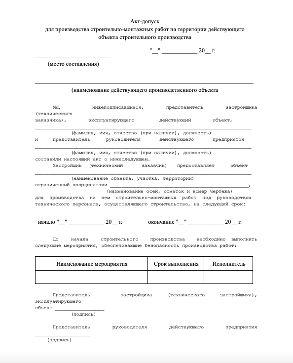
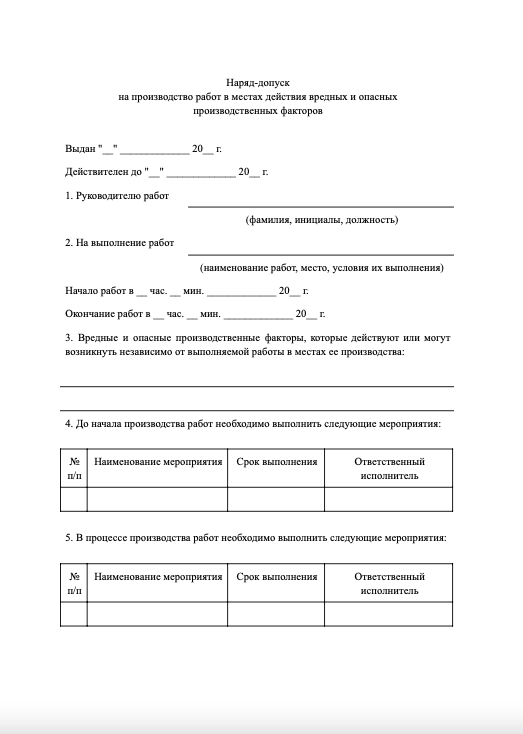
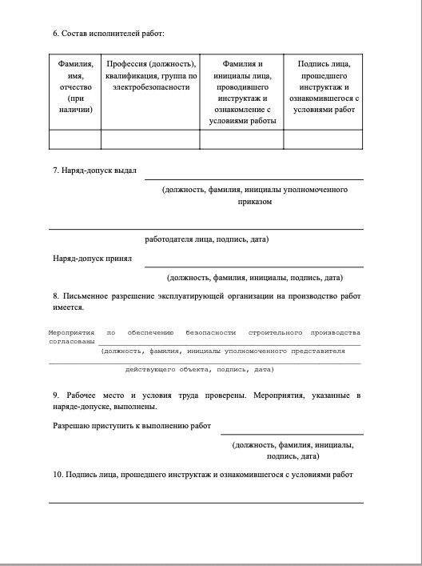

Как оформить акт-допуск и наряд-допуск
Перед началом строительного производства на территории действующего объекта работодатель и представитель собственника эксплуатирующего объект должны оформить акт-допуск для производства строительно-монтажных работ на территории объекта строительного производства и наряд-допуск на производство работ в местах действия вредных и (или) опасных производственных факторов. В этом уроке вы узнаете, как оформлять эти документы. Выясните, какие данные нужны для их составления, поймете, кто и в каких случаях выдает такие акты.

Как оформить акт-допуск
Для того чтобы у сторон в дальнейшем не возникало претензий и вопросов, акт допуск нужно составлять как можно более подробно.
Какие данные вносят в акт-допуск:
- Информация о сторонах договора и о конкретных лицах, которые имеют право подписать этот акт. Как правило, это руководители работ, которые будут контролировать со стороны заказчика и выполнять работу со стороны подрядчика;
- Место проведения работы. Указывают цех, участок, отдел и другие объекты.
- Список работ, которые будут производить. Список должен быть максимально точным, чтобы стороны могли определить, какие мероприятия по охране труда предусмотреть;
- Мероприятия по охране труда. Указывают мероприятия, которые должны быть выполнены до начала работы, во время и по окончанию.
- Даты начала и конца выполнения работ.
Акт можно заполнять как в электронном виде, так и от руки. Во втором случае вся информация должна быть читаемой, без помарок и исправлений.

Как оформить наряд-допуск
Работы, связанные с повышенной опасностью, производимые в местах действия вредных и опасных производственных факторов, должны выполняться в соответствии с нарядом-допуском, определяющим содержание, место, время и условия производства работ, необходимые меры безопасности, состав бригады и лиц, ответственных за безопасность работ.
Смотрите в памятке ниже что относится к работам, связанным с повышенной опасностью.
Материал к уроку (PDF)
Какие работы связаны с повышенной опасностью
PDF получен с исходной страницы. Поля для названия организации и других персональных данных оставлены пустыми.
До начала выполнения работ по наряду-допуску для выявления риска, связанного с возможным воздействием опасностей на работников, необходимо провести осмотр рабочего места.
При осмотре рабочего места должны выявляться причины возникновения возможных опасностей, а также вредных и/или опасных производственных факторов, а также погодные условия, технология предстоящего производства работ, используемые машины, механизмы, инструменты, оборудование и материалы для производства работ, технические особенности конструкции и расположения рабочих мест.
Кто и когда выдает наряды-допуски
Перечень лиц, имеющих право выдачи нарядов-допусков, а также лиц, ответственных за безопасное выполнение работ утверждается работодателем.
Наряд-допуск оформляется в двух экземплярах, один экземпляр остается у лица, выдавшего наряд, а второй выдается ответственному руководителю работ.
При необходимости выполнения нескольких видов работ повышенной опасности в процессе работы, допускается оформлять один наряд-допуск с включением всех необходимых мер для безопасного выполнения работ повышенной опасности.
Перед началом работ руководитель работ обязан ознакомить работников с мероприятиями по безопасности производства работ и провести с ними целевой инструктаж по охране труда с оформлением записи в наряде-допуске.
При выполнении работ в охранных зонах сооружений или коммуникаций наряд-допуск должен выдаваться при наличии письменного разрешения организации - владельца этого сооружения или коммуникации.
Должностное лицо, выдавшее наряд-допуск, обязано осуществлять контроль за выполнением предусмотренных в нем мероприятий по обеспечению безопасности производства работ.
Рекомендуемый образец наряда-допуска


Наряд-допуск выдается на срок, необходимый для выполнения заданного объема работ, если иной срок не установлен соответствующими правилами по охране труда для объектов или видов работ.
Задание
Встроенное упражнение — сохранен текст
Статическое представление
TestCards
Текстовые фрагменты упражнения извлечены с исходной встроенной страницы. Проверка ответов и анимация здесь не работают.
- Новая статья WEB АРМ
- Как оформить акт-допуск и наряд-допуск
- Какие работы должны выполняться в соответствии с нарядом-допуском?
- работы, связанные с повышенной опасностью, производимые в местах действия вредных и опасных производственных факторов
- работы на высоте
- работы с применением подъемных сооружений и других строительных машин в охранных зонах воздушных линий
- Все ответы верны
- Вам стоит повторить тему урока :(
- Вы отлично усвоили тему!
- Перечень работ, связанных с повышенной опасностью, выполняемых с оформлением наряда-допуска, и порядок проведения этих работ устанавливаются
- приказом работодателя
- приказом работодателя в соответствии с требованиями охраны труда и Правилами по охране труда
- приказом работодателя подрядной организации в соответствии с требованиями охраны труда и правилами
- порядок установлен правилами по охране труда
- Как оформляется наряд допуск?
- оформляется прорабом, в двух экземплярах один экземпляр остается у лица, выдавшего наряд, а второй выдается ответственному руководителю работ
- оформляется лицом, уполномоченным выдавать наряды-допуски на выполнение работ с повышенной опасностью в одном экземпляре ответственному руководителю работ
- оформляется лицом, уполномоченным выдавать наряды-допуски на выполнение работ с повышенной опасностью в двух экземплярах
- При необходимости выполнения нескольких видов работ повышенной опасности в процессе работы, допускается оформлять один наряд-допуск с
- включением мероприятий по подготовке рабочего места
- включением всех необходимых мер для безопасного выполнения работ повышенной опасности
- включением организационных мероприятий, а также определения необходимого состава бригады для проведения работ повышенной опасности
- включением технических мероприятий, ограждением зон опасных и обозначением зон вредных факторов
- Перед началом работ руководитель работ обязан:
- провести целевой инструктаж работникам, проверить наличие средств защиты
- ознакомить работников с мероприятиями по безопасности производства работ и провести с ними целевой инструктаж по охране труда
- ознакомить работников с мероприятиями по безопасности производства работ с оформлением записи в наряде-допуске
- ознакомить работников с мероприятиями по безопасности производства и провести с ними целевой инструктаж по охране труда с оформлением записи в наряде-допуске
В следующем уроке выясните, как контролирующий работодатель и участники строительства проводят организационные мероприятия.
Самое важное
Перечень работ с повышенной опасностью, которые выполняют с оформлением наряда-допуска, устанавливают приказом работодателя по требованиям охраны труда и правилам
Наряд-допуск оформляется лицом, уполномоченным выдавать наряды-допуски на выполнение работ с повышенной опасностью